week 3:computer-controlled cutting
the trophy challenge
For this week's assignment, I wanted to make 12 cardboard packages for 12 wooden trophies.
I work a lot with cardboard and I quite like it-- it's a sturdy, flexible material that laser cuts really well. Plus, it's free and easy to find, so perfect for prototyping.
I've been interested in press fit designs for a while now but had actually only cut basic finger joint boxes before. This time I wanted to adapt a "happy meal" package and try out a few different joints.
Here is the type of box design I was going for:
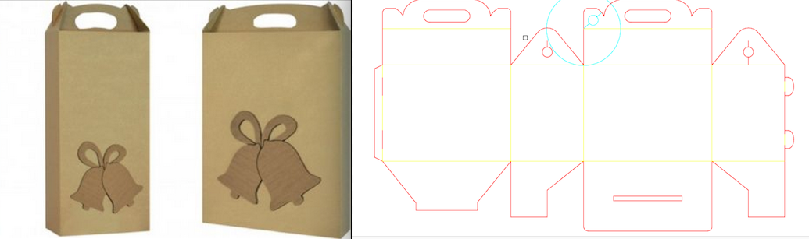I also wanted to design a package for the two big wine boxes that I was using to transport the trophies from Lisbon to Paris, were the awards ceremony will take place. These are the boxes that needed packing:
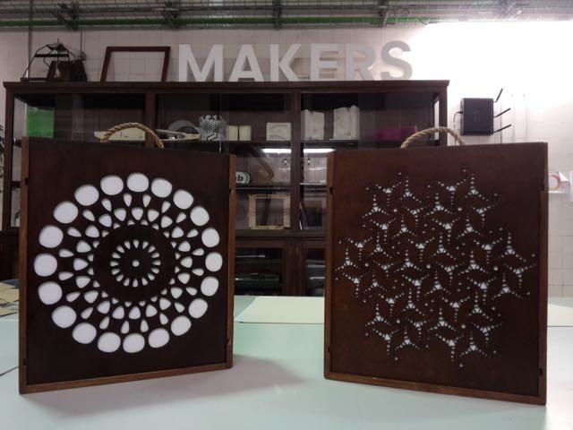So I decided to start thinking about my package by physically wrapping some paper around the boxes; here's the high tech design I came up with:
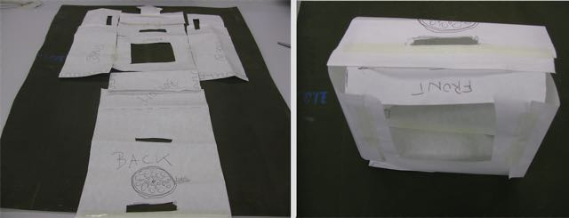Then I tried to draw it on inkscape, by using the cloning feature that had been mentioned in class.
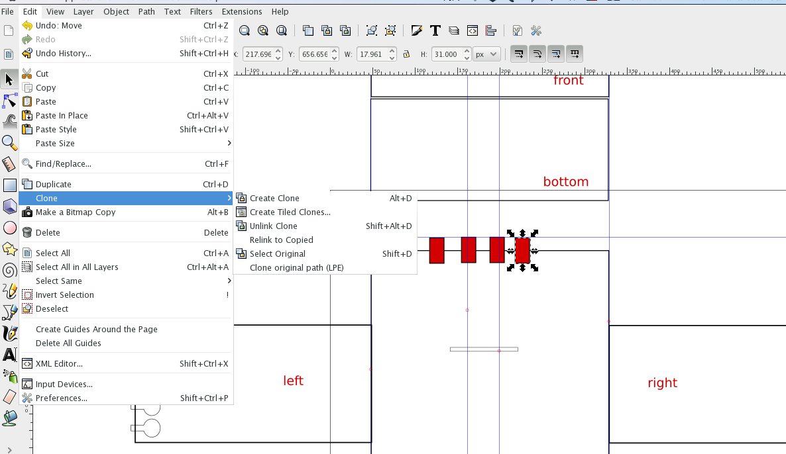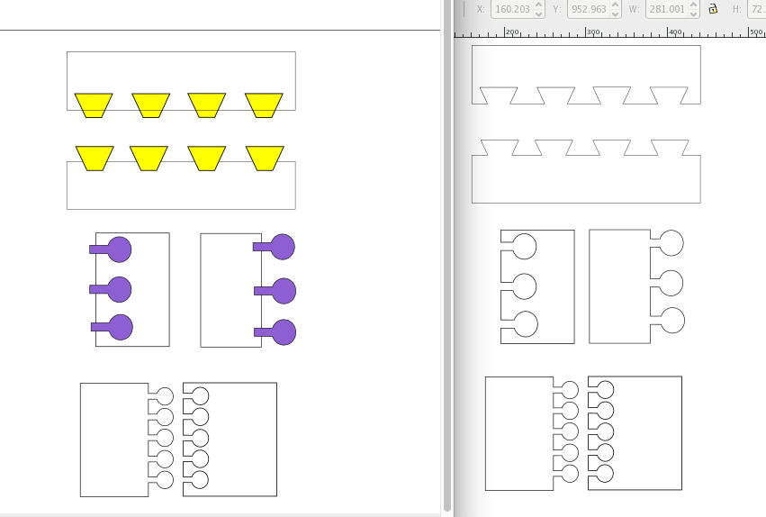
It's important not to forget the direction of your cuts, when using cardboard, as the corrugated side is way stronger than the other. For the joints, this is particularly important, or you will end up with a flimsy box that can be destroyed when you are mounting it.

In the meantime, my deadline to deliver the 12 trophies was fast approaching, so I decided to focus on the trophy packaging.
First I was to adapt the original file to the trophies' size. This was easy enough, but once I started cutting it in the laser, I realized that the joints needed some work, as they were not fitting properly, making it quite hard to mount the package. Moreover, I had to do various cutting tests in order to give all folding parts enough tolerance for the materials' thickness (1.6 mm corrugated cardboard). I ended up using no kerf on the joints, as they fit pretty tightly without it.
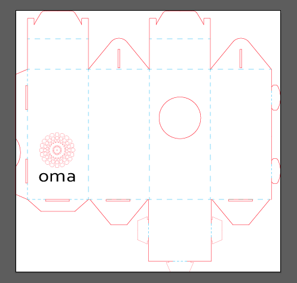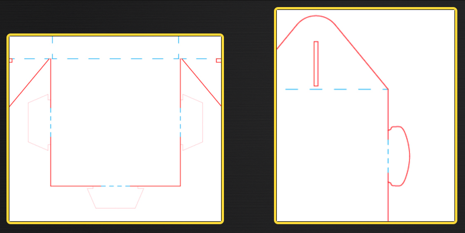
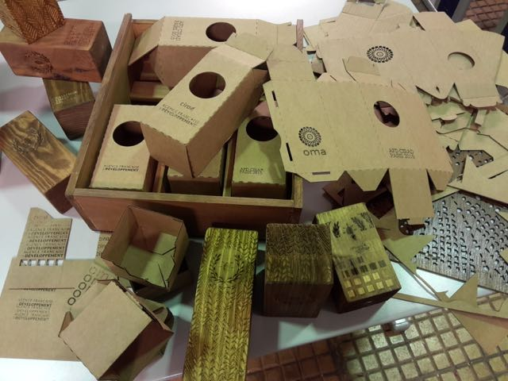
As I was planning to engrave the cardboard as well, I did a few tests to figure out the best parameters for the laser (60 watt CO2 laser, GCC Mercury III). I used the following:
-- 1.6mm cardboard cutting - power 99, speed 15, PPI 400
-- cardboard engraving - 2 different fonts, 2 different settings:
front - power 99, speed 70 (done twice)
back - power 99, speed 55 (only one passage)
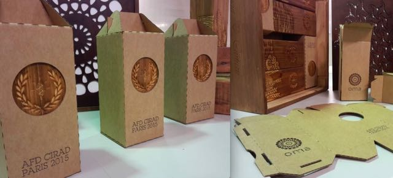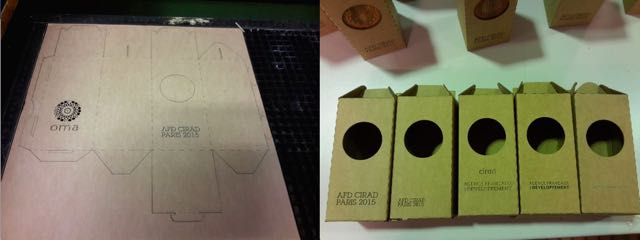
For the actual laser engraving on the wooden trophies (pine wood), I used the following parameters:
-- front logo - two rasters with power 99, speed 70
-- front pattern design - one raster with power 99, speed 70
-- back font -- two rasters with power 99, speed 70, one raster with 2mm out-of-focus laser at power 99, speed 90
Here are some pics of the wood engraving process:
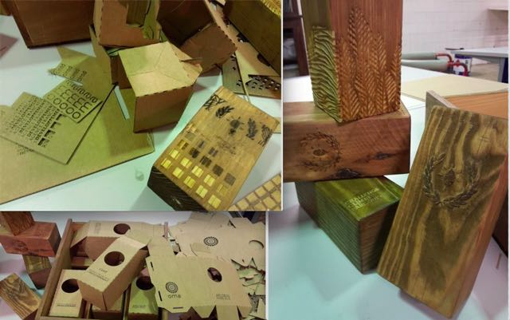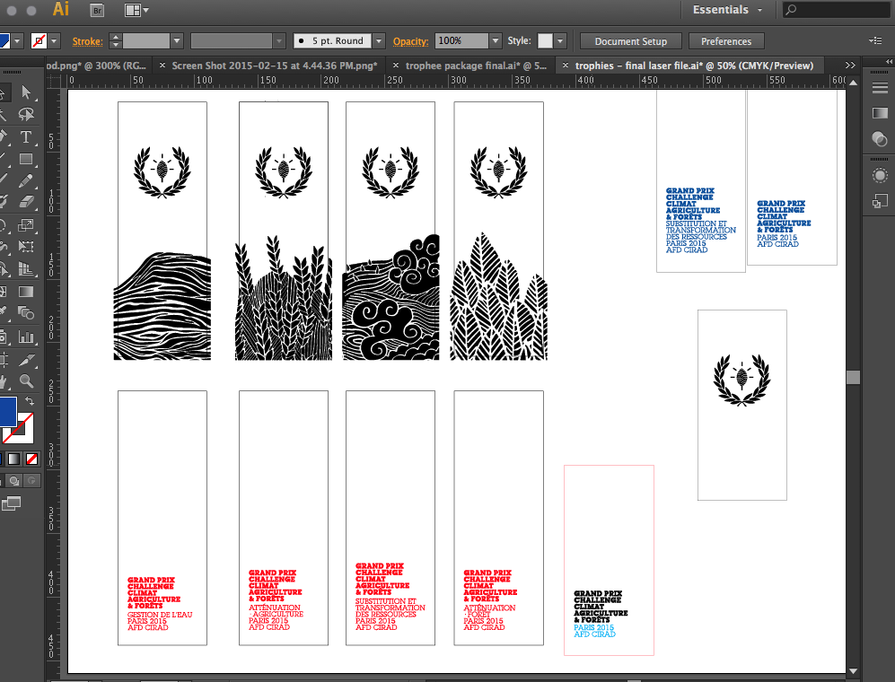
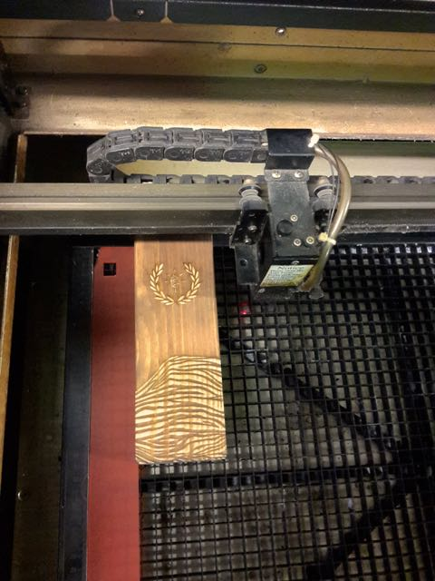
And here are some different versions of engraving and reverse engraving on the wood. The reverse engraving (were you basically raster the whole surface and leave your drawing raised) looks quite nice, but takes a lot longer:
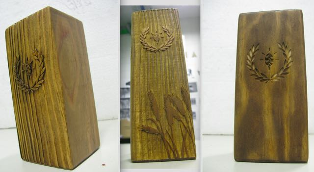And here is the final set of trophies with their packages:
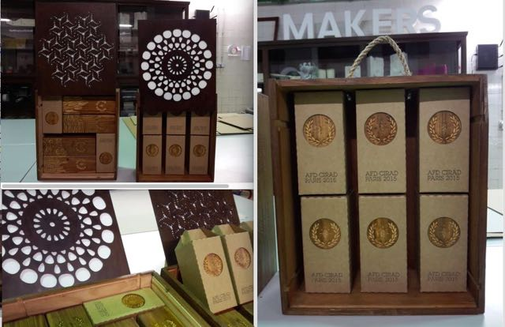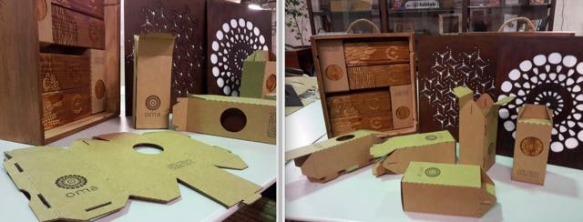
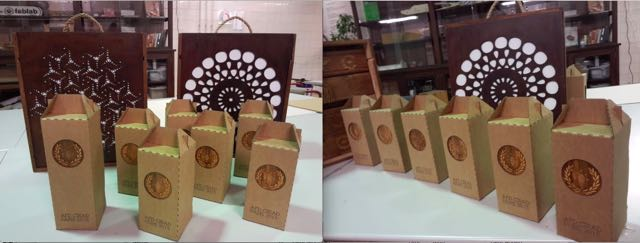
Source file:
Trophy package
The whole trophy packaging process ended up being very time consuming, so I was unable to finish the wine boxes package.